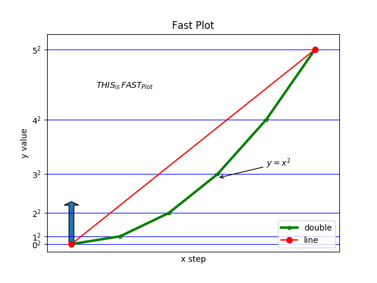
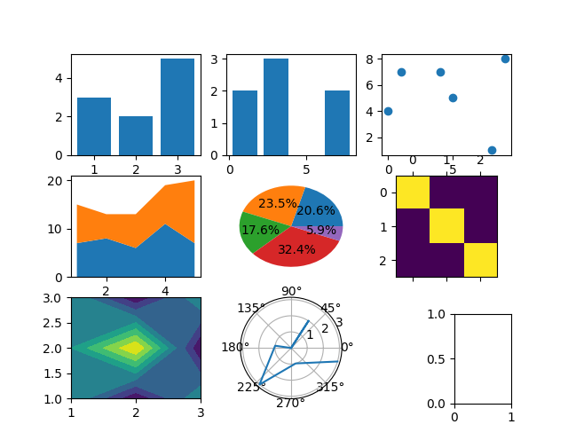
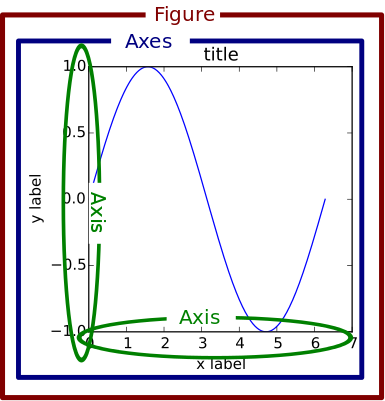
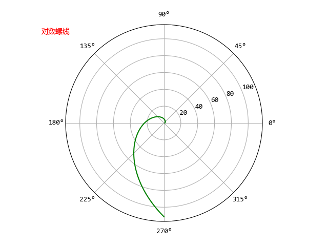
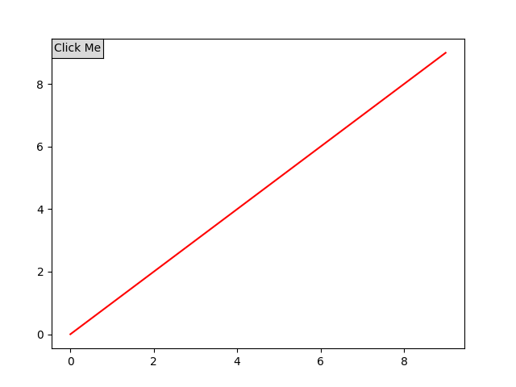
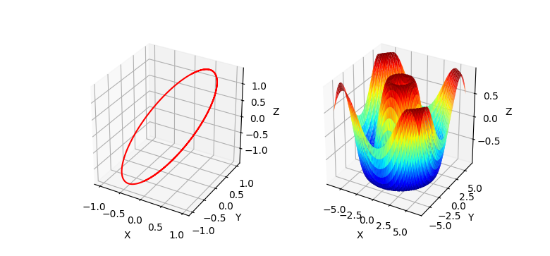
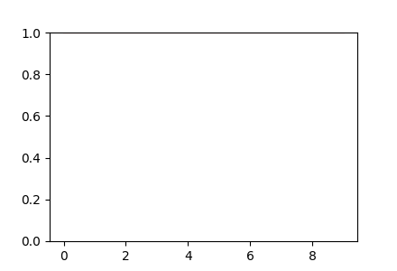
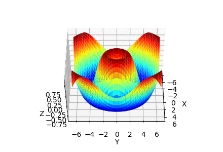
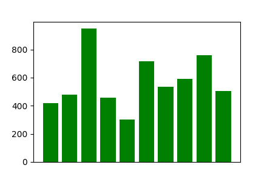

工具参考书之Matplotlib使用
参考书籍：
Matplotlib官方在线文档
Matplotlib入门介绍
Matplotlib绘图实例
Matplotlib是一个Python的2D图形包，和NumPy结合的非常好。
快速绘图
快速绘图，即直接调用matplotlib.pyplot模块的函数来绘图，为类似于的Matlab的函数式绘图。
基本绘图实例
import matplotlib.pyplot as plt
plt.rcParams['font.family'] = 'Microsoft YaHei Mono' # 设置中文字体
plt.plot([0,1,4,9,16,25], color='green', marker='*',
linewidth=3, label="double")
plt.plot([0,5], [0,25], 'r-o',
markersize=7, label="line") # 绘制(x,y)数据点，x默为[0,1,2...]
plt.arrow(x=0, y=0, dx=0, dy=5, width=0.1) # 绘制箭头
plt.annotate(r"$y=x^2$", xy=(3,8.5), arrowprops=dict(arrowstyle='->'),
xytext=(4,10)) # 添加注解
plt.text(0.5, 20, r"这是$\,FAST_{Plot}$") # 添加文本
plt.grid(True, color='b') # 显示网格
plt.box(True) # 显示方框坐标轴
plt.xlim(-0.5, 5.5) # 获取或设置坐标范围
plt.ylim(ymin=-1, ymax=27)
plt.xscale('linear') # 设置坐标刻度类型，即对轴坐标进行缩放
plt.yscale('linear')
plt.title("Fast Plot") # 绘图标题
plt.xlabel("x step") # 坐标轴标签
plt.ylabel("y value")
plt.xticks([]) # 设置坐标刻度标签
plt.yticks([x**2 for x in range(0,6)],
(r'$0^2$',r'$1^2$',r'$2^2$',r'$3^2$',r'$4^2$',r'$5^2$',))
plt.legend(loc='lower right') # 添加图例
plt.show() # 显示绘图结果

子图绘图实例
import matplotlib.pyplot as plt
plt.subplot(3, 3, 1)
plt.bar([1,2,3], height=[3,2,5]) # 条形图
plt.subplot(332)
plt.hist([0,3,2,1,6,2,6], bins=[0,2,4,6,8], rwidth=0.8) # 直方图
plt.subplot(333)
plt.scatter(x=[0,1,8,9,4,5], y=[4,7,1,8,7,5]) # 散点图
plt.subplot(334)
plt.stackplot([1,2,3,4,5], [7,8,6,11,7], [8,5,7,8,13]) # 堆叠图
plt.subplot(335)
plt.pie([7,8,6,11,2], autopct="%1.1f%%") # 饼状图
plt.subplot(336)
plt.matshow([[1,0,0], [0,1,0], [0,0,1]], fignum=False) # 矩阵图
plt.subplot(337)
plt.contourf([1,2,3], [1,2,3], [[1,0,1],[1,2,0],[1,0,1]]) # 等高线
plt.subplot(338, projection='polar')
plt.polar([0,1,2,3,4,5,6], [0,2,0,1,3,1,3]) # 极坐标图
plt.axes((0.8, 0.1, 0.1, 0.2)) # 自定义子图位图
plt.show()

获取封装的对象
matplotlib.pyplot其实是通过封装对象实现的函数式绘图，所以，matplotlib.pyplot也提供了一些获取内部对象的函数，以及针对内部对象操作的函数（新出现的类名称在后面会讲到）：
plt.figure：创建一个新的matplotlib.figure.Figure对象plt.clf：清空当前figure内容plt.close：关闭当前figureplt.draw：重绘当前figureplt.axes：添加一个matplotlib.axes.Axes对象到当前的figure，且设为当前axesplt.subplot：添加一个子图matplotlib.axes.Axes对象到当前figureplt.cla：清空当前axes内容plt.gcf：获取当前figure实例对象plt.gca：获取当前axes实例对象plt.gci：获取当前matplotlib.cm.ScalarMappabl实例对象plt.figlabels：返回所有figure的标签plt.fignums：返回所有figure的编号imread, imsave, imshow：图像文件的读取、保存和显示
基本框架
想要深入的学习matplotlib绘图，了解matplotlib内部模块和类是很有必要的，同时，使用面向对象式的编程，来使用matplotlib绘图也是很有必要的。
底层backends
- matplotlib.backend_bases.FigureCanvasBase：对绘图表面（类似于“绘图纸”）的概念进行封装
- matplotlib.backend_bases.RendererBase：执行绘图动作（类似于“画笔”）
- matplotlib.backend_bases.Event：处理键盘与鼠标事件
backend_bases需要处理底层的绘图显示和事件处理操作，例如在用户面界上绘图，可以使用Qt、Wx、Tk等作为底层，相应的底层操作封装在了backends.backend_qt5agg、backends.backend_wxagg、backends.backend_tkagg中；而绘制PDF、PNG等文件的底层操作，则封装到了backends.backend_pdf、backends.backend_agg中。
中间层artist
- matplotlib.artist.Artist：使用
RendererBase在FigureCanvasBase上绘图（类似于“画师”）
通常我们并不需要关心底层后端的操作细节，而是使用Artist绘图。Artist分为简单类型和容器类型两种，简单类型的Artist为标准的绘图元件，如：
而容器类型则可以包含许多简单类型的Artist，使它们组织成一个整体，如：
下面是Artist类的常用属性：
alpha : 透明度，值在0到1之间，0为完全透明，1为完全不透明
animated : 布尔值，在绘制动画效果时使用
axes : 此Artist对象所在的Axes对象，可能为None
clip_box : 对象的裁剪框
clip_on : 是否裁剪
clip_path : 裁剪的路径
contains : 判断指定点是否在对象上的函数
figure : 所在的Figure对象，可能为None
label : 文本标签
picker : 控制Artist对象选取
transform : 控制偏移旋转
visible : 是否可见
zorder : 控制绘图顺序
属性都通过相应的get_*和set_*函数进行读写，也可以使用set()和get()函数对多个属性进行读写。
Figure
matplotlib.figure.Figure是一个最大的Artist，包含了一个图的所有元素。例如：背景是一个Rectangle对象，使用Figure.patch属性表示；可以使用add_subplot或add_axes来添加Axes；一个简图关系如下所示（图片来源）：

Axes
matplotlib.axes.Axes包含了许多组成Figure的元素，如Axis、Tick、Line2D等，以及包含了众多的绘图函数，如plot、bar、pie等。Axes.patch属性用于表示Axes的背景，当使用笛卡尔坐标时，patch属性是一个Rectangle对象；当使用极坐标时，patch属性则是Circle对象。
可以简单地把Axes当一个图表，而一个Figure可以包含多个图表。即用Axes绘制图表，在Figure中摆放图表。
Axis
matplotlib.axis.Axis是坐标轴容器，包括坐标轴上的刻度线、刻度文本、坐标网格、坐标轴标题等内容。
顶层pyplot
matplotlib.pyplot就是前面讲面的函数式绘图了，使用绘图更加便捷。
面向对象式绘图
- 纯面向对象式的绘图
使用matplotlib.backends.backend_agg做为后端，再结合NumPy，一个纯面向对象的编程实例如下：
import numpy as np
import matplotlib as mpl
import matplotlib.figure as mfig
import matplotlib.backends.backend_agg as mbk
mpl.rcParams['font.family'] = 'Microsoft YaHei Mono' # 设置中文字体
fig = mfig.Figure()
canvas = mbk.FigureCanvas(fig)
ax = fig.add_axes([0.1, 0.1, 0.8, 0.8], projection='polar') # 添加极坐极图表
ax.text(np.pi*0.8, 180, '对数螺线', color='red')
theta = np.linspace(0, 1.5*np.pi, 1000, dtype = np.float)
r = np.exp(theta)
ax.plot(theta, r, color='green') # 绘制对数螺线
fig.savefig('fig.png') # 保存成fig.png

- 结合pyplot的面向对象式绘图
纯面向对象绘图，需要保存图表到文件，不能即时的显示绘制的图表，不太方便。结合pyplot，可以使得面向对象式绘图更方便，一个实例如下：
import numpy as np
import matplotlib as mpl
import matplotlib.pyplot as plt
mpl.rcParams['font.family'] = 'Microsoft YaHei Mono' # 设置中文字体
fig = plt.figure('fig') # 添加Figure
ax = fig.add_subplot(111, projection='polar') # 添加极坐极图表
theta = np.linspace(0, 1.5*np.pi, 1000, dtype = np.float)
r = np.exp(theta)
ax.plot(theta, r, color='green') # 绘制对数螺线
ax.text(np.pi*0.8, 180, '对数螺线', color='red')
plt.show(fig) # 显示绘图
用户交互
用户交互主要是指，在显示绘图后，通过鼠标、键盘等事件，或者按钮、选择框等控制，与用户进行信息交互。
事件交互
要进行鼠标、键盘等事件交互，需要将事件回调函数，连接到事件管理器，可以使用matplotlib.backend_bases.FigureCanvasBase的mpl_connect和mpl_disconnect函数来连接或断开事件回调函数。更具的可以参考事件交互官方资料。一个简单的实例如下：
import matplotlib
import matplotlib.pyplot as plt
def on_key(event:matplotlib.backend_bases.KeyEvent):
if event.key == 'escape':
plt.close(event.canvas.figure) # 关闭接收事件Figure
fig = plt.figure('fig') # 添加Figure
key_id = fig.canvas.mpl_connect('key_press_event', on_key) # 连接事件回调函数
# fig.canvas.mpl_disconnect(key_id) # 断开事件回调函数
ax = fig.add_axes([0.1, 0.1, 0.8, 0.8])
ax.plot(range(10), color='red')
plt.show()
所有可用事件
| 事件 | 类 | 说明 |
|---|---|---|
button_press_event |
MouseEvent | 鼠标按钮被按下 |
button_release_event |
MouseEvent | 鼠标按钮被释放 |
draw_event |
DrawEvent | 画布绘图 |
key_press_event |
KeyEvent | 按键被按下 |
key_release_event |
KeyEvent | 按键被释放 |
motion_notify_event |
MouseEvent | 鼠标移动 |
pick_event |
PickEvent | 画布中的对象被选中 |
resize_event |
ResizeEvent | 图形画布大小改变 |
scroll_event |
MouseEvent | 鼠标滚轮被滚动 |
figure_enter_event |
LocationEvent | 鼠标进入新的图形 |
figure_leave_event |
LocationEvent | 鼠标离开图形 |
axes_enter_event |
LocationEvent | 鼠标进入新的轴域 |
axes_leave_event |
LocationEvent | 鼠标离开轴域 |
close_event |
CloseEvent | 关闭Figure |
界面交互
界面控件在matplotlib.widgets模块中，一个控件需要与一个Axes绑定。一个简单实例如下：
import matplotlib
import matplotlib.pyplot as plt
def on_click(event:matplotlib.backend_bases.MouseEvent):
plt.close(event.canvas.figure) # 关闭接收事件Figure
fig = plt.figure('fig') # 添加Figure
ax0 = fig.add_axes([0.1, 0.1, 0.8, 0.8])
ax0.plot(range(10), color='red')
ax = fig.add_axes([0.1, 0.85, 0.1, 0.05])
btn = matplotlib.widgets.Button(ax, "Click Me", )
cid = btn.on_clicked(on_click) # 连接点击事件
# btn.disconnect(cid) # 断开点击事件
plt.show()

3D绘图
Matplotlib已经内置3D绘图模块mplot3d API，在程序中引入即可使用。绘图时，主要使用Axes3D的函数进行绘制3D图形绘制。一个简单实例如下：
import numpy as np
import matplotlib.pyplot as plt
import mpl_toolkits.mplot3d as plt3d
fig = plt.figure('fig') # 添加Figure
ax1 = fig.add_subplot(121, projection='3d') # 添加3d图表
t = np.linspace(0, 3*np.pi, 1000)
x = np.sin(t) # 生成x,y坐标数据
y = np.cos(t)
z = x + y # 生成z数据
ax1.plot_wireframe(x, y, z, color='red') # 绘制
ax1.set_xlabel('X')
ax1.set_ylabel('Y')
ax1.set_zlabel('Z')
ax2 = fig.add_subplot(122, projection='3d') # 添加3d图表
a = b = np.linspace(-2*np.pi, 2*np.pi, 1000)
x, y = np.meshgrid(a, b) # 生成x,y坐标数据
z = np.sin(np.sqrt(x**2 + y**2)) # 生成z数据
ax2.plot_surface(x, y, z, shade=True, cmap='jet') # 绘制
ax2.set_xlabel('X')
ax2.set_ylabel('Y')
ax2.set_zlabel('Z')
plt.show()

3D绘图也可以绘制散点图、条形图等，这里就不一一举例了。
动画生成
matplotlib.animation模块与动画的生成、保存等相关。生成动画的基本函数及其基本参数如下：
基本函数：animation.FuncAnimation(fig, func, frames)
基本参数：
fig是动画所在的Figure；func是一个回调函数，用于处理动画每帧数据的更新；frames是每帧动画数据的来源，即传递给func的参数来源；
frames |
说明 |
|---|---|
None |
传给func的参数是当前的帧数，即0,1,2,3… |
int |
传给func的参数是自增的小于int的整数，即0,1,2…int,0,1,2… |
iterable |
传给func的参数是可迭代对象，如list,tuple等 |
generator function |
传给func的参数是迭代器函数的返回值 |
实例如下：（使用ImageMagick来生成gif图片，具体教程可以参照这）
- frames = None 或 int
import numpy as np
import matplotlib as mpl
import matplotlib.pyplot as plt
import matplotlib.animation as animation
mpl.rcParams['animation.convert_path'] = 'D:/ImageMagick/magick.exe'
fig = plt.figure('fig', figsize=(4.4,3))
ax = fig.add_subplot(111)
N = 10
line, = ax.plot(np.random.rand(N), 'r-') # 添加线元素，line是plot返回list的第0个元素
def update(num):
"""update函数用于更新fig中的line等对象"""
line.set_ydata(np.arange(N)**num)
ax.set_ylim(0, N**num)
return line
frame = 5 # 传递update的参数为 0, 1, 2, 3, 4, 0, 1, 2, 3, ...
# frame = None # 传递update的参数为当前的帧数，即0, 1, 2, 3, 4, 5, 6, ...
# 注意：使用None貌似不能生成gif图片
anim = animation.FuncAnimation(fig, func=update, frames=frame, interval=500)
anim.save('anim1.gif', writer=animation.ImageMagickWriter(fps=2))
plt.show()

- frames = iterable
import numpy as np
import matplotlib as mpl
import matplotlib.pyplot as plt
import mpl_toolkits.mplot3d as plt3d
import matplotlib.animation as animation
mpl.rcParams['animation.convert_path'] = 'D:/ImageMagick/magick.exe'
fig = plt.figure('fig', figsize=(4.4,3))
ax = fig.add_subplot(111, projection='3d')
a = b = np.linspace(-2*np.pi, 2*np.pi, 1000)
x, y = np.meshgrid(a, b) # 生成x,y坐标数据
z = np.sin(np.sqrt(x**2 + y**2)) # 生成z数据
ax.plot_surface(x, y, z, cmap='jet') # 绘制
ax.set_xlabel('X')
ax.set_ylabel('Y')
ax.set_zlabel('Z')
def update(ang):
"""update函数用于更新fig中的ax等对象"""
ax.view_init(elev=50, azim=ang)
return ax
frame = np.linspace(0, 360, num=50)
anim = animation.FuncAnimation(fig, func=update, frames=frame, interval=500)
anim.save('anim2.gif', writer=animation.ImageMagickWriter(fps=5))
plt.show()

- frames = generator function
import numpy as np
import matplotlib as mpl
import matplotlib.pyplot as plt
import matplotlib.animation as animation
mpl.rcParams['animation.convert_path'] = 'D:/ImageMagick/magick.exe'
fig = plt.figure('fig', figsize=(4.4,3))
ax = fig.add_subplot(111, xticks=[])
N = 10
sort = np.array(1000*np.random.rand(N), dtype=np.int)
bars = ax.bar(np.arange(0, N), height=sort, color='g')
def update(data):
"""update函数用于更新fig中的bars等对象"""
for k,rect in enumerate(bars.patches):
rect.set_height(data[k])
return bars
def generator():
"""迭代器函数，冒泡排序算法"""
for i in range(sort.size - 1):
for j in range(sort.size - 1 - i):
if sort[j] > sort[j+1]:
sort[j], sort[j+1] = sort[j+1], sort[j]
yield(sort)
anim = animation.FuncAnimation(fig, func=update, frames=generator, interval=200)
anim.save('anim3.gif', writer=animation.ImageMagickWriter(fps=5))
plt.show()

转载请注明来源，欢迎对文章中的引用来源进行考证，欢迎指出任何有错误或不够清晰的表达。可以在下面评论区评论，也可以邮件至 [ yehuohan@gmail.com ]
文章标题:工具参考书之Matplotlib使用
本文作者:z000tech
发布时间:2018-03-09, 12:10:10
最后更新:2019-05-21, 20:48:39
原始链接:http://yehuohan.github.io/2018/03/09/笔记/DOC/工具参考书之matplotlib使用/版权声明: "署名-非商用-相同方式共享 4.0" 转载请保留原文链接及作者。